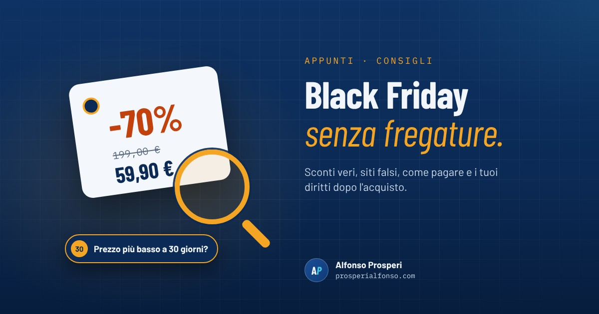

Venerdì 27 novembre è Black Friday, ma molte offerte sono già partite e vanno avanti fino al Cyber Monday di lunedì 30. È il momento giusto per comprare quello che serviva, ed è anche il periodo preferito da chi gonfia gli sconti o apre negozi falsi. Ecco come riconoscere un affare vero e pagare senza rischi.
1. Lo sconto è vero?
Dal 1° luglio 2023 c'è una regola precisa: quando un negozio annuncia uno sconto, il prezzo "di prima" deve essere il più basso applicato nei 30 giorni precedenti (articolo 17-bis del Codice del consumo). Serve a fermare il trucco più vecchio: alzare il prezzo a inizio novembre per poi "scontarlo" a fine mese.
Un esempio. Una TV costa 500 euro per tutto ottobre. A inizio novembre il negozio la porta a 700 euro e il giorno del Black Friday la mette "in offerta" a 500 euro, -29%. Prima della regola poteva farlo. Oggi no: il prezzo da barrare è 500 euro, il più basso degli ultimi 30 giorni, quindi a 500 euro non c'è nessuno sconto da annunciare. Per scrivere -20%, la TV deve costare davvero 400 euro.
Attenzione però: la regola garantisce che lo sconto sia calcolato in modo onesto, non che quel prezzo sia il più basso in giro. Per questo conviene sempre confrontare.
Non sempre viene rispettata. A inizio 2026 Altroconsumo ha controllato 208 siti di e-commerce: il 62% non era in regola e solo uno su quattro indicava chiaramente il prezzo più basso del mese prima.
- Cerca il prezzo dei 30 giorni. Accanto allo sconto dovrebbe esserci scritto il prezzo più basso dell'ultimo mese. Se c'è solo un prezzo barrato, non fidarti a occhi chiusi.
- Guarda lo storico dei prezzi. Per i prodotti su Amazon c'è Keepa, che ti spiego qui sotto.
- Confronta. Cerca lo stesso prodotto su due o tre negozi: spesso lo "sconto" è il prezzo normale da un'altra parte.
Come funziona Keepa. Keepa è un servizio gratuito che registra i prezzi dei prodotti venduti su Amazon, anche su Amazon Italia. Se installi la sua estensione per Chrome, Firefox o Edge, quando apri un prodotto su Amazon compare sotto il prezzo un grafico con l'andamento dei giorni e dei mesi precedenti: in un colpo d'occhio vedi se il prezzo di oggi è davvero basso o se un mese fa costava meno. Puoi anche impostare un avviso con il prezzo che sei disposto a pagare, e Keepa ti avvisa quando ci arriva. Dal telefono c'è l'app per Android, oppure il sito keepa.com. Ne parlo più nel dettaglio in questa guida.
2. Attenzione ai siti falsi
In questi giorni nascono negozi online che copiano grafica e nomi di marchi conosciuti, con prezzi incredibili. I segnali da guardare:
- sconti esagerati, per esempio -80% su un prodotto di marca appena uscito
- un indirizzo del sito strano o leggermente diverso da quello originale
- nessun indirizzo, partita IVA o numero di telefono dell'azienda
- recensioni tutte entusiaste, tutte uguali o tutte dello stesso giorno
- pagamento solo con bonifico o ricarica
Il Garante per la privacy consiglia di non arrivare a un negozio da un link ricevuto per SMS, mail o social, ma di scrivere a mano l'indirizzo nel browser, e di informarsi sul venditore confrontando più fonti, perché anche le recensioni possono essere false. Se un link ti sembra sospetto puoi controllarlo con VirusTotal.
3. Il falso "pacco in giacenza"
Con tanti ordini in viaggio arrivano anche i messaggi del finto corriere: "il tuo pacco è fermo, paga 1,99 euro per la consegna". È una delle truffe più comuni di questo periodo. Non aprire il link: controlla la spedizione dall'app o dal sito ufficiale del negozio o del corriere. Su Android alcuni di questi messaggi vengono già segnalati da Google Messaggi, come ho raccontato qui.
4. Come pagare
- Carta prepagata o virtuale. Molte banche permettono di crearne una per gli acquisti online: così non esponi la carta del conto principale.
- PayPal o sistemi simili. Non passano i dati della carta al venditore e prevedono una tutela se l'oggetto non arriva. Ne ho parlato nel confronto Satispay e PayPal.
- Notifiche attive per ogni pagamento, così ti accorgi subito di un movimento strano.
- Mai bonifici o ricariche a sconosciuti: se qualcosa va storto, quei soldi difficilmente tornano indietro.
5. I tuoi diritti dopo l'acquisto
Negli acquisti online hai 14 giorni per cambiare idea e restituire il prodotto senza dover spiegare il motivo: è il diritto di recesso, e per gli oggetti il termine parte da quando li ricevi. Ci sono eccezioni, per esempio i prodotti che si deteriorano in fretta. Se il venditore non ti ha informato di questo diritto, il termine si allunga fino a 12 mesi.
Poi c'è la garanzia legale di 2 anni dalla consegna, che vale anche online e copre i difetti: è un obbligo del venditore. E se vuoi risparmiare davvero, valuta anche l'usato garantito e il ricondizionato, come la sezione di Amazon di cui ho parlato qui.
Cinque controlli prima di cliccare "Paga"
- Lo sconto è calcolato sul prezzo più basso degli ultimi 30 giorni?
- Il sito è quello vero? Indirizzo scritto a mano, contatti e partita IVA presenti.
- Ho confrontato il prezzo con almeno un altro negozio?
- Sto pagando con carta prepagata, virtuale o PayPal, non con un bonifico?
- So come restituire il prodotto se non va bene?
Il miglior affare del Black Friday resta comprare quello che serviva davvero, al prezzo giusto. Il resto può aspettare il prossimo sconto.
Fonti
- Ministero delle Imprese e del Made in Italy, annunci di riduzione di prezzo: domande frequenti
- Ministero delle Imprese e del Made in Italy, il diritto di recesso
- La tua Europa, garanzie sulle merci acquistate nell'UE
- Altroconsumo, Sconti online: sei su dieci non sono corretti (12 febbraio 2026)
- Open, i consigli del Garante privacy per il Black Friday (13 novembre 2026)